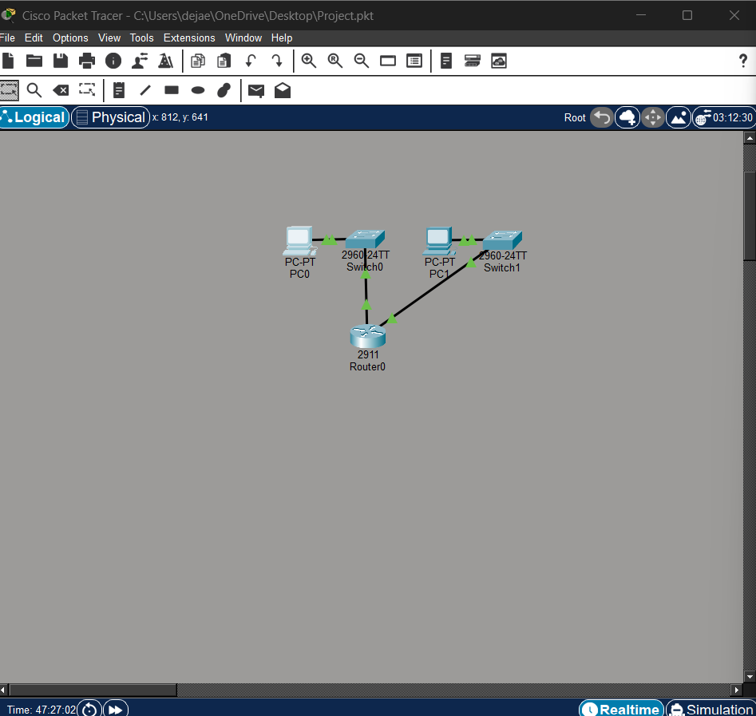
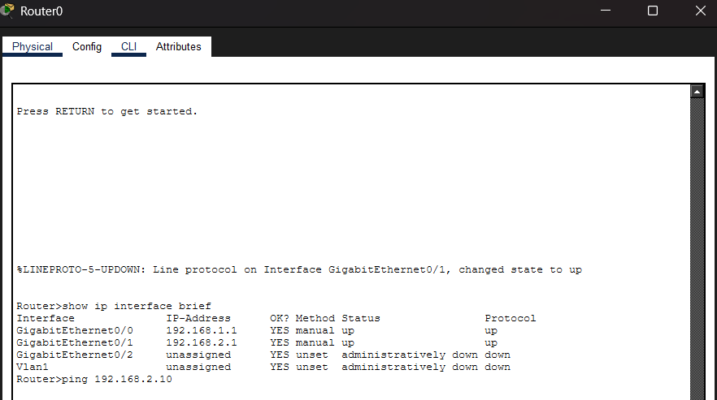
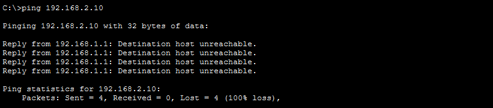
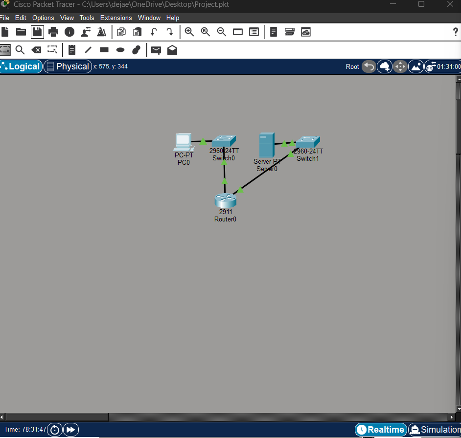
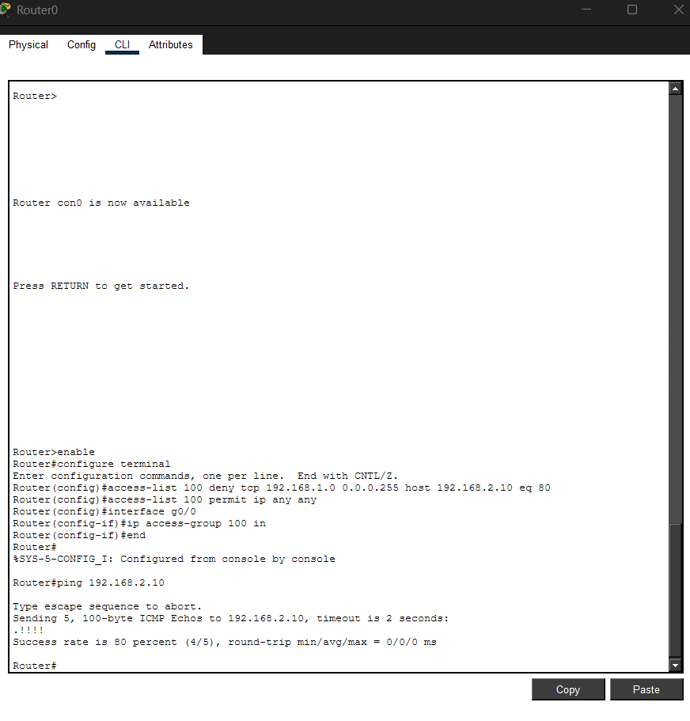
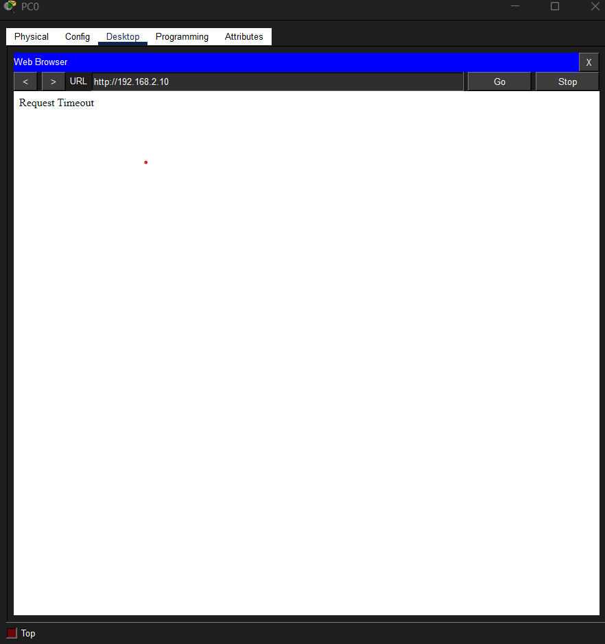
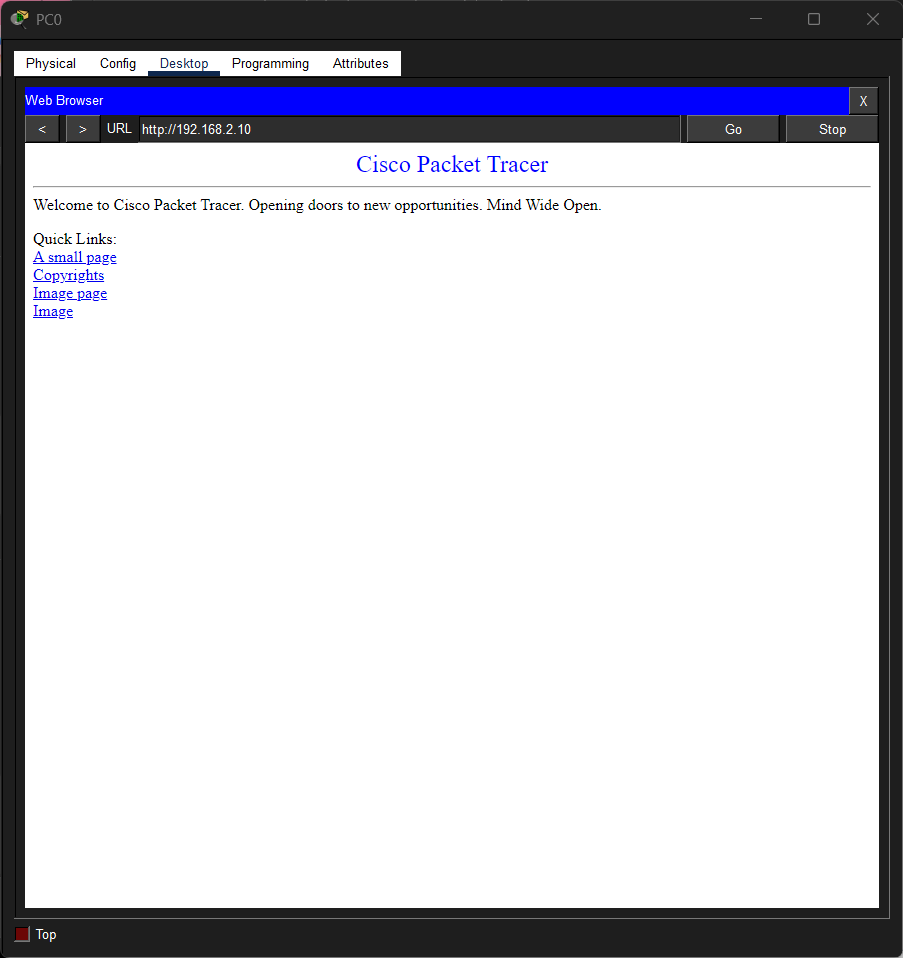
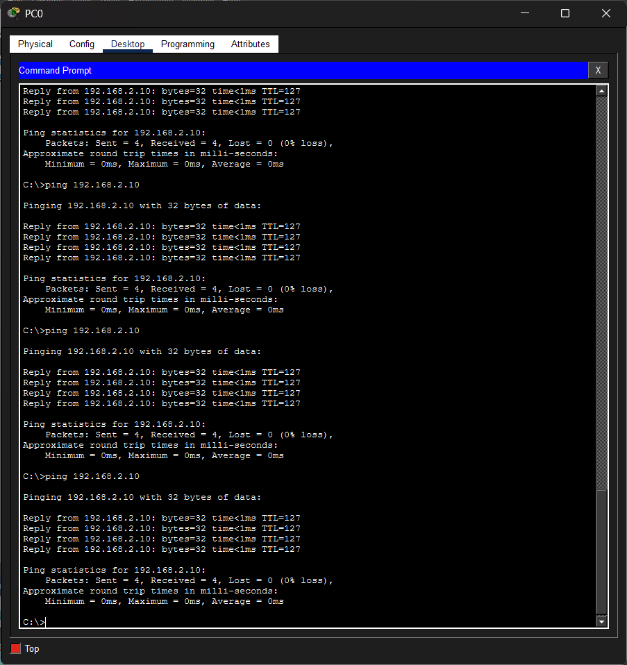
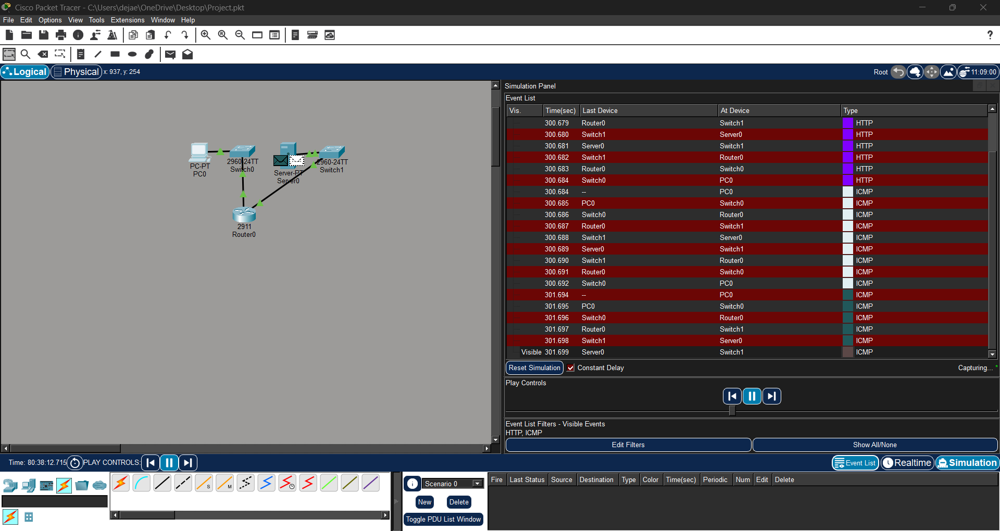

Investigation 01: LAN Configuration and Connectivity Troubleshooting
ValidatedBuilt a routed LAN environment and validated endpoint communication using static IPv4 addressing, router interface activation, and ICMP testing. Troubleshooting focused on isolating host configuration issues and restoring connectivity.
Network Topology

Figure 1. Packet Tracer topology used to validate host connectivity across a routed LAN environment.
Connectivity Validation

Figure 2. ICMP test results confirming end-to-end communication after troubleshooting and host configuration correction.
Investigation 02: DHCP Service Configuration
ValidatedConfigured a Cisco router to provide DHCP services for client systems, including address exclusion, scope definition, default gateway assignment, and DNS settings. Validation confirmed successful dynamic endpoint configuration.
DHCP Scope Configuration

Figure 3. DHCP configuration defining the address pool, reserved range, gateway, and DNS server settings.
Client Address Validation

Figure 4. Client endpoint output confirming successful receipt of dynamic IPv4 settings from the DHCP service.
Investigation 03: ACL Enforcement Across Routed Networks
ValidatedBuilt a two-network routed environment and implemented a standard ACL to restrict communication from a defined source host. Validation included troubleshooting cabling, interface state, routing paths, and endpoint addressing before confirming enforcement.
ACL Topology

Figure 5. Segmented topology with two routed networks used to validate ACL-based traffic restriction.
Interface Verification

Figure 6. Router interface verification confirming that both routed networks were operational before ACL validation testing.
Blocked Traffic Evidence

Figure 7. Failed ICMP communication from a restricted host confirming that traffic was not successfully forwarded to the protected network due to ACL enforcement.
Investigation 04: Firewall Traffic Filtering & Access Control
ValidatedDesigned and implemented a segmented network environment to simulate firewall behavior using extended ACLs. Configured filtering rules to block HTTP access to a protected server while maintaining ICMP connectivity, then validated enforcement through browser and ping testing.
Network Topology

Figure 8. Segmented network topology demonstrating a client network and protected server environment connected through a Cisco router configured with extended ACLs.
Extended ACL Configuration

Figure 9. Extended ACL configuration applied on the router to block HTTP traffic on port 80 from the source network while permitting all other traffic.
HTTP Traffic Blocked

Figure 10. Web browser request timing out due to ACL rules blocking HTTP traffic, confirming successful firewall-like behavior.
Investigation 05: Intrusion Detection & Traffic Analysis
Suspicious Activity DetectedConducted packet-level traffic analysis using simulation mode to observe both normal and suspicious behavior in a segmented network environment. Established normal HTTP communication as a baseline, then identified repeated ICMP requests from a single source host as potential reconnaissance activity.
Normal Traffic

Figure 11. Legitimate HTTP communication between client and server used to establish baseline behavior.
Suspicious Activity

Figure 12. Repeated ICMP requests from a single source host indicating potential reconnaissance activity.
Packet Flow Analysis

Figure 13. Simulation mode event list displaying both HTTP and ICMP traffic, enabling comparison of normal user behavior and suspicious repeated requests.